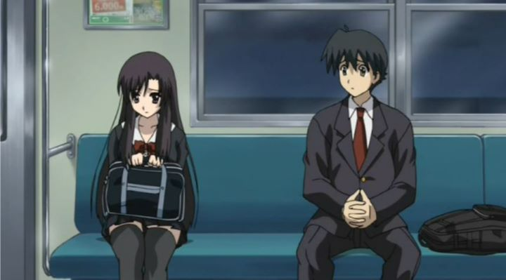

"School Days" is the worst anime ever made.That's a bold statement to make of any show. How is it that "School Days" received such a reputation? It can probably be traced back to a single source: Arkada, the stage name of a Canadian anime video-reviewer that runs an online show called "Glass Reflection." He started posting reviews in the late 2000's, with reviews that were well-edited and with detailed analysis. Well-primed before the boom of anime reviewers on Youtube, he became one of the more popular online critics on the subject, holding onto that success for over a decade. Like most reviewers, he first reviewed shows he himself was interested in, typically only talking about shows he was passionate about. To even things out (and to give fans what they want: a review to laugh over), he gave an early review of "School Days," stating his horror at hateful characters and their dumb logic throughout the series. To this day, be it on podcasts or convention panels, some fan will bring up the show, which he continues to play on with reactions of disgust.By putting his hatred online, I think Arkada accidently caused an unintended effect. The show wasn't actually licensed in North America at the time, and it was so obscure that it likely never would. But in 2014, Discotek did release the show on DVD, and then Bluray. I can only come to the conclusion that any fan interest was caused by the angry review; otherwise, most anime fans would never had heard about the show. Congratulations, Arkada: you made "School Days" a cult classic.But is it really all that bad? Let's step back to understand the source material: an adult visual novel. One with a fairly generic premise: you play a high-school boy trying to win the affection of one (of many) girls. As common for the genre, sex scenes are included. The biggest differentiator and selling point was the bad endings: you see, visual novels tend to come with multiple endings. Based on the choices the player makes, you might reach one of many good, bad, joke, or "true" endings. Part of the fun isn't just to get to the best possible ending, but to get through ALL of them to see the differences. And in the "School Days" visual novel, the bad endings aren't just bad: they're horrific and violent, far more so than you might expect from the premise on the back of the box. That's what makes it fun to play! (By the way, the visual novel itself also got translated for the English audience a few years after the aforementioned bad review... one of the few big-name VN's to ever get released outside of Japan to this day!)When any studio is tasked to adapt a visual novel into an anime, they're stuck with a tough choice about how to convey the story. Should the anime just pick a single story route, presumably one with the best ending? Should it try to condense all the routes into a single story? Should it use a time-travel mechanic to repeat the story with the different routes? Most attempts struggle to satisfy either newcomers or old fans of the source material. With "School Days," studio TNK came up with a interesting conclusion: "People like the game because of the bad endings, right? Let's adapt the show to have the worst possible ending!"It's a bold and innovative plan. But to get to the worst possible ending, the lead character has to constantly make the worst possible decisions. And that's the big problem for anyone who wants to sit through the 12-episode show.The series starts with Makoto, a hapless high-school student who starts to notice Kotonoha, a cute girl that takes the same train as him to school. Unsure about how to proceed, he lets Sekai, an outgoing girl that sits next to him in class, arrange them to meet and help him begin dating her. By the end of the first episode, things seem off to a good start, until Sekai admits her own feelings for Makoto, after he already began dating Kotonoha. It makes clear that a larger cast will become involved in this web of emotions.Things only start going downhill in the second episode. Makoto happens to be a terrible date, and a little too eager to kiss Kotonoha, or more. It's only with continued assistance and advie from Sekai that he finally starts making progress in their relationship, although it becomes clear that his final goal, sex, won't be an option any time soon. Conflicted with her own feelings, Sekai allows Makoto to "practice" with her, until things go too far. Makoto admits feeling tired of Kotonoha, and confesses his love for Sekai. But somehow, he just can't confront Kotonoha, even though she increasingly feels proud to have Makoto as her boyfriend.Before the half-way point of the show, Makoto's status is a mess. As it should be. Is Makoto really wrong to not be persuaded by sex? Romantic relationships are a complicated thing in real life. No one really knows what they are doing, have wildly different expectations, and inevitably, people get hurt. Compare this for a moment to any other anime with romance. If it's a serious romantic-drama, there might be the odd misunderstanding or two, but things always get resolved with the purity of the lead characters' love. In fan-service comedies, the men will claim they're horny in private, but when girls throw themselves to them, they're too embarressed and insist on changing the subject. And if multiple girls are interested? "We'll share!" they exclaim. We have no shortage of fantasies for lonely people. By contrast, "School Days" might be the most realistic depiction of real relationships and motivations I've seen in anime, even if it's barely deeper than any American daytime soap-opera. It even keeps sex in (off-screen and outside the episode's runtime, of course... but how many other televised anime confirm that sex actually happens?). ... but into the second half of the show, things continue to get even more complicated. Had Makoto ever cleanly broke-up with Kotonoha earlier, a lot of heart-break would have been avoided, but he avoids the confrontation for seemingly months. In the meantime, Kotonoha is harrassed and bullied by other girls, called a liar for claiming to have a boyfriend. And Makoto's desire to accept any confession of love and avoid any confrontation makes him a playboy in the school, with four separate girlfriends (plus three more, if you include the threesome by the girls that were just curious). Early in the show, Makoto's situation was understandable, even if one couldn't defend him. Before the end, he's simply despicible. For that matter, the show is cruel and mean-spirited in a variety of ways. Makoto himself admits Kotonoha's main feature being her large breasts, the largest of any girl in the school. His best friend, a pervert himself who can't get a girlfriend, is even more shallow, secretly earning disdain from Makoto (as if he had any right to judge). A side-cast of girls is one of the worst gang of bullies I've seen, not only hurting Kotonoha, but ultimately the entire female student body. Among the several acts of sex in the show, a couple could be classified as rape, even though the girls in question don't fight strongly in the moment and don't object later. By the way, did I mention the entire cast is in their FIRST YEAR of high school? Yeah, we're watching minors engage in their sex lives. I'm not saying it doesn't happen in real life, but it's creepy to design a show around it for entertainment purposes.Pacing is a bit of a problem too. In the first half, one could label the series as a standard romantic-comedy-drama, with all the hijinks you would expect from a high-school anime. A couple scenes of this remain in the second half, when things have clearly taken a more dramatic tone. The viewer might also catch teacher lectures being oddly ominous, foreshadowing what would eventually come. The comedic elements help make the show watchable, but it's such a contrast that it feels out of place. Anyway, things finally come to a conclusion in the final episode. It's violent and completely out of left field. Sadly, most of the culprits don't get their deserved reward, but Makoto sure does. If you somehow haven't been spoiled yet, I won't ruin the ending. Famously, the original Japan broadcast delayed that final episode due to a real-life crime that happened that month, replacing it with video footage of a cruise boat, resulting in the meme "nice boat" before online memes were even a thing.If you didn't already know what was coming and watched "School Days" blind, you would be baffled to the stupidity and selfishness of Makoto and those around him, and would be shocked and confused by the ending. Even if you knew the ending and understood why characters made such stupid choices, eagerly waiting to see how it would all conclude... you would have to be a little twisted to watch the whole thing without a bad taste in your mouth. "School Days" is ambitious and well-crafted, but it's not a story I would recommend anyone watch out of enjoyment. At best, I'd recommend watching it out of respect for the experiment.The show was clearly a low-budget one. Despite 2007 being a particularly strong year for anime in terms of visuals, "School Days" looks cheap, often with little motion, even for lip-syncing. Character designs themselves are fairly attractive, even if they all wear the same school uniform throughout. A surprisingly amount of fanservice is present, and given the most production time: you won't see sex, but you'll see bouncing naked boobs in the bath. An English dub was never prepared, but the Japanese actors do a good job conveying the complex emotions of each character, while also keeping them distinct and memorable. The audio track is seemingly empty, aside from a few slow vocal tracks during key moments, which are beautiful but generic. If the show leaves you depressed, there's an extra OVA on the American release (a second OVA isn't included). One could treat it as the "joke" version, with an alternate universe where the girls are magical "sentai" heroes, with extra nudity and humor for the fun of it. After my experience, it was well appreciated to the point that I would call it essential."School Days" is definitely not the worst anime ever made. It's close, but I've seen far worse disasters, usually from productions that don't even bother to try. At least the writers of the show TRIED to acheive something special here. And arguably, they did. But it would take a brave soul to sit through it. The only audience I'd actively recommend it to... might be to the men around the world that keep cheating on their wives and girlfriends, as a cautionary tale. If you mess with the emotions of young girls, you might just lose your head.
- "Ani" More reviews can be found at : https://2danicritic.github.io/ Previous review: review_School-Live! Next review: review_Scrapped_Princess